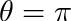

|
v1.3.15
|
Loading...
Searching...
No Matches
|
v1.3.15
|

| Dependencies | NVIDIA CUDA 9.0+ Visualizer plug-in |
|---|---|
| CMakeLists.txt | set( PLUGINS "aeriallidar" ) |
| Header File | #include "AerialLiDAR.h" |
| Class | AerialLiDARcloud |
The Aerial LiDAR plugin is used to process LiDAR data collected from an airborne platform into 2D and 3D raster data. The plugin is able to create the following data products on an arbitrary raster grid:
| Package | |||
|---|---|---|---|
| NVIDIA CUDA 9.0+ | Mac OSX:$ brew install Caskroom/cask/cuda | Use CUDA installer | Use CUDA installer |
For help choosing the correct CUDA toolkit version for your system, consult this page: Choosing the right CUDA and OptiX version
Useful OS-specific information for installing CUDA can be found here: Install and Set-up
If you are using a PC, it is likely you will need to increase the GPU timeout in the registry, otherwise calculations lasting longer than 2 secs. will timeout and kill your program. A guide on how to increase the timeout can be found here: Increasing graphics driver timeout
| Constructors |
|---|
| AerialLiDARcloud( void ) |
The AerialLiDARcloud class contains point cloud data, and is used to perform processing operations on the data. The class constructor does not take any arguments.
The plug-in assumes that laser pulses are launched from some surface above the canopy downward. When processing LiDAR data, each laser pulse is defined by 1) the (x,y,z) coordinates of the laser-object intersection point, and 2) the angle of the laser traversal direction in spherical coordinates (e.g., for a laser pulse traveling directly downward, the zenith angle is  and azimuth  is arbitrary).
is arbitrary).

The laser beam emitted from a LiDAR instrument has some finite diameter, which increases with distance from the scanner. In many cases, the beam diameter may be larger than the width of individual leaves by the time it reaches the canopy. This means that a single laser pulse may intersect multiple objects along its path to the ground.
For a "discrete-return" instrument, only one (or sometimes a few) hit points are recorded per laser pulse. The distance from the scanner recorded for the hit point is an effective average distance to all objects intersected by the beam.
By contrast "full-waveform" instruments are able to record multiple hit point locations along a single laser pulse by analyzing the return timeseries or "waveform". This class of instruments is able to process the timeseries of pulse returns into separate distances. Full-waveform instruments are preferred because they provide more information, particularly in dense canopies where a discrete-return instrument would rarely record the location of the ground. Technically, full-waveform instruments ultimately output discrete hit points, but for the purposes of this documentation we will consider discrete-return data to have a single hit point per laser pulse, and full-waveform data to have an unlimited number of hit points per laser pulse.

Scan metadata is typically specified by loading an XML file containing the relevant metadata for each scan. The XML file specifies the path to an ASCII text file that contains the data for each scan. The code below gives a sample XML file for loading multiple scans. Not all entries are required. At a minimum, this consists of the Cartesian (x,y,z) coordinates of each hit in the scan. Additional optional information can be specified for each hit point, as given in the table below.
<helios>
<scan>
<filename> /path/to/data/file.xyz </filename>
<ASCII_format> x y z zenith azimuth target_count target_index </ASCII_format>
</scan>
</helios>The ASCII text file containing the data is a plain text file, where each row corresponds to a hit point and each column is some data value associated with that hit point. The "ASCII_format" tag defines the column format of the ASCII text file (in this case, file.xyz). Each entry in the list specifies the meaning of each column. Possible fields are listed in the table below:
| Label | Description | Default behavior |
|---|---|---|
| x | x-component of the (x,y,z) Cartesian coordinate of the hit point. | None: REQUIRED |
| y | y-component of the (x,y,z) Cartesian coordinate of the hit point. | None: REQUIRED |
| z | z-component of the (x,y,z) Cartesian coordinate of the hit point. | None: REQUIRED |
| target_count | Total number of returns/hits along the hit's beam path. | REQUIRED for full-waveform; N/A for discrete-return |
| target_index | Index of returns/hits along the hit's beam path (target_index=0 for first return, =1 for second return, =target_count-1 for last return). NOTE: target indices can start at 0 or 1 for the first return as long as it is consitent throughout. | REQUIRED for full-waveform; N/A for discrete-return |
| zenith (or zenith_rad) | Zenithal angle (degrees) of scan ray direction corresponding to the hit point. If "theta_rad" is used, theta has units of radians rather than degrees. | 180 (or  ) ) |
| azimuth (or phi_rad) | Azithal angle (degrees) of scan ray direction corresponding to the hit point. If "phi_rad" is used, phi has units of radians rather than degrees. | 0 |
| r (or r255) | red component of (r,g,b) hit color. If "r" tag is used, r is a floating point value and 0<r<1. If "r255" is used, r is an integer and 0<r<255. | r=1 or r255=255 |
| g (or g255) | green component of (r,g,b) hit color. If "g" tag is used, g is a floating point value and 0<g<1. If "g255" is used, g is an integer and 0<g<255. | g=0 or g255=0 |
| b (or b255) | blue component of (r,g,b) hit color. If "b" tag is used, b is a floating point value and 0<b<1. If "b255" is used, b is an integer and 0<b<255. | b=0 or b255=0 |
| (label) | User-defined floating-point data value. "label" can be any string describing data. For example, "reflectance", "temperature", etc. | N/A |
The XML file can be automatically loaded into the point cloud using the loadXML() function, as illustrated below.
#include "Context.h"
#include "LiDAR.h"
using namespace helios;
int main( void ){
LiDARcloud pointcloud; //Initialize the LiDAR point cloud
pointcloud.loadXML("/path/to/file.xml");
}Rectangular grid cells are used as the basis for processing point cloud data. For example, total leaf area (or leaf area density) may be calculated for each grid cell. Grid cells or "voxels" are parallelpiped volumes. The top and bottom faces are always horizontal, but the cells can be rotated in the azimuthal direction. 2D raster data such as the ground height is given on a rectangular grid.
Grid cells are defined by specifying the (x,y,z) position of its center, and the size of the cell in the x, y, and z directions. Additional optional information can also be provided for grid cells, which are detailed below.
| Tag | Description | Default behavior |
|---|---|---|
| center | (x,y,z) Cartesian coordinates of grid center. | None: required. |
| size | Size of the grid in x, y, and z directions. | None: required. |
| rotation | Azimuthal rotation of the grid in degrees. | 0 |
| Nx | Grid cell subdivisions in the x-direction. | 1 |
| Ny | Grid cell subdivisions in the y-direction. | 1 |
| Nz | Grid cell subdivisions in the z-direction. | 1 |
The grid cell subdivisions options allow the cells to be easily split up into a grid of smaller cells. For example, Nx=Ny=Nz=3 would create 27 grid cells similar to a "Rubik's cube".
Grid cell options can be specified in an XML file using the tags listed in the table above. Multiple grid cells are added by simply adding more <grid>...</grid> groups to the XML file.
<grid>
<center> 0 0 0.5 </center>
<size> 100 100 10 </size>
<rotation> 30 </rotation>
<Nx> 3 </Nx>
<Ny> 3 </Ny>
<Nz> 3 </Nz>
</grid>